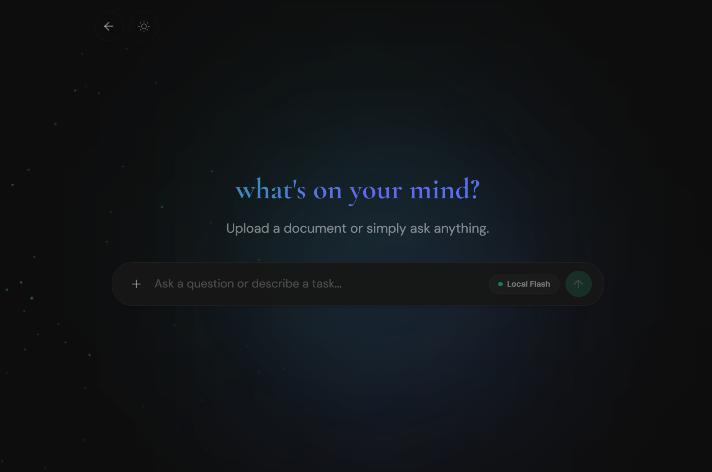
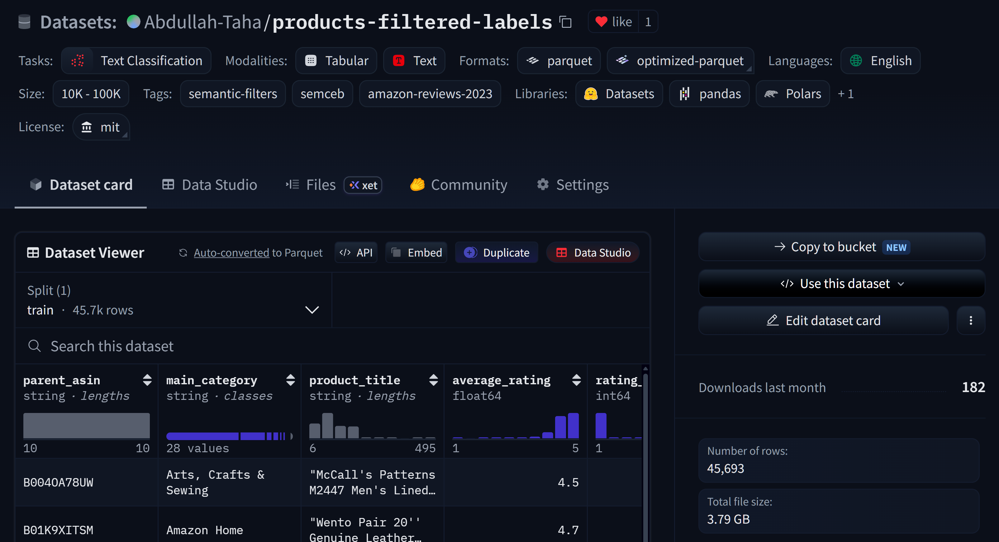

Oct 2024 – Present
M.Sc. AI & Robotics
University of Technology Nuremberg (UTN)
Grade 1.7
AI & Robotics Student • ML and Generative AI • Research and development
Master Student @ University of Technology Nuremberg
Education and professional experience in AI, robotics, and applied machine learning.
University of Technology Nuremberg (UTN)
Grade 1.7
Schaeffler AG, Herzogenaurach, Germany
Built an agentic pipeline using LangChain that automatically validates and ingests 13 inconsistent industrial data sources into a unified database for natural-language querying.
Applied Skills: Agentic AI, RAG, LangChain, automated data ingestion and data preprocessing
Stanford Online & DeepLearning.AI · Coursera
Sekuen, Dubai, UAE
Built and presented working AI prototypes to potential B2B clients across multiple industries.
Applied Skills: AI prototyping, workflow mapping, stakeholder communication
University of Michigan · Coursera
University of Technology Malaysia (UTM)
Grade 3.68/4.0 (First Class Honours)
A curated list of applications, datasets, pipelines, and frameworks built end-to-end.

A browser-based workspace with an agentic AI planner for interacting with documents directly in-browser, without server-side uploads.
Visit Project
Large-scale semantic-filter datasets built by applying LLM-generated predicates to Amazon products and reviews, producing structured Boolean labels for filtering and evaluation.
View on GitHubA lightweight markdown-based context-carrying standard for preserving context across AI coding tool sessions.
View on GitHubResearch in model training, distillation, retrieval, authorship verification, and evaluation.
Compared full SFT, PEFT, soft- and hard-label distillation, and embedding-based logistic regression for training a small student model online from teacher outputs during query execution.
Ongoing — findings intended for research publication.
Retrieval-augmented chatbot combining semantic search, keyword retrieval, and a fine-tuned model to help students navigate university documentation.
Built three PyTorch training pipelines and implemented GRPO post-training with visual similarity rewards to align plot rendering outputs.
Evaluated six frontier language models' stylistic profiles on German text pairs to test consistency of stylistic traits across subject matters.